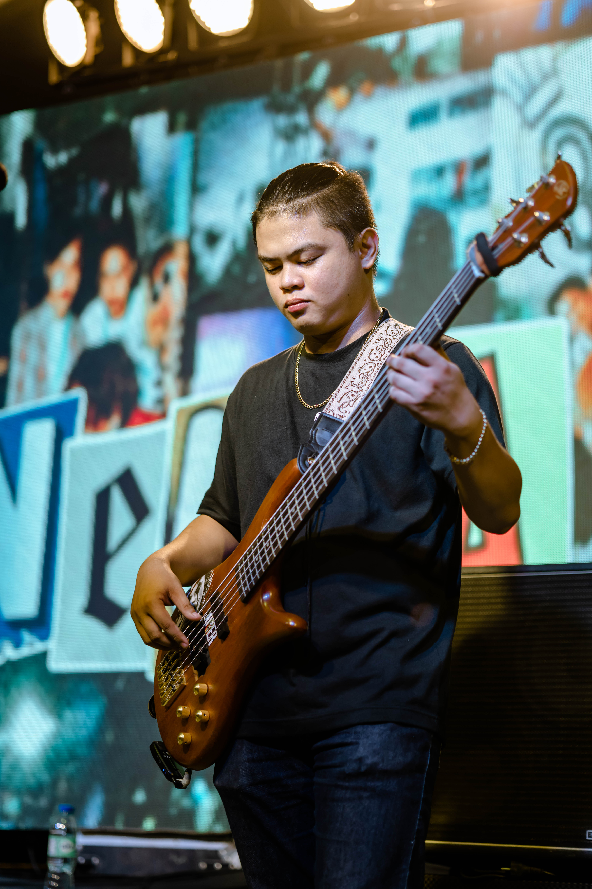

Hello, I'm
Dan Carlo
IT Student & Musician
I’m an aspiring IT professional, musician, and creative who enjoys building things with technology and music.


Dan Carlo Villafranca
I'm an IT student with a passion for technology, music, and creative projects. I enjoy exploring how technology can be turned into practical and meaningful experiences.
I'm constantly learning and experimenting with different technologies while working on projects that allow me to develop both my technical and creative skills.
Outside of programming, I explore into photo-editing, video editing, and music is another important part of who I am. I enjoy finding ways to combine creativity with technology and continue building things that reflect my interests.
View My Projects